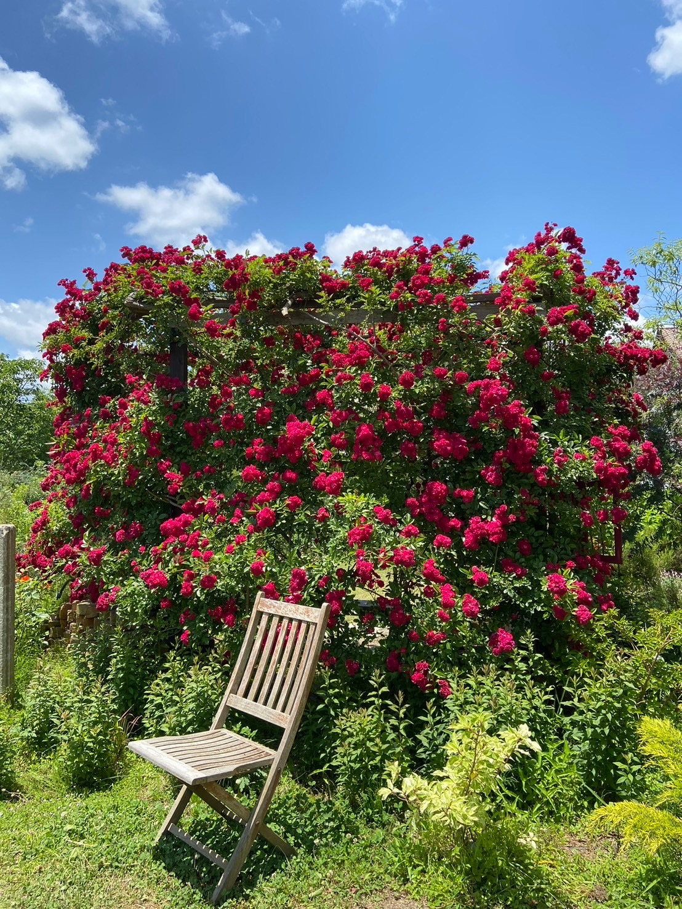
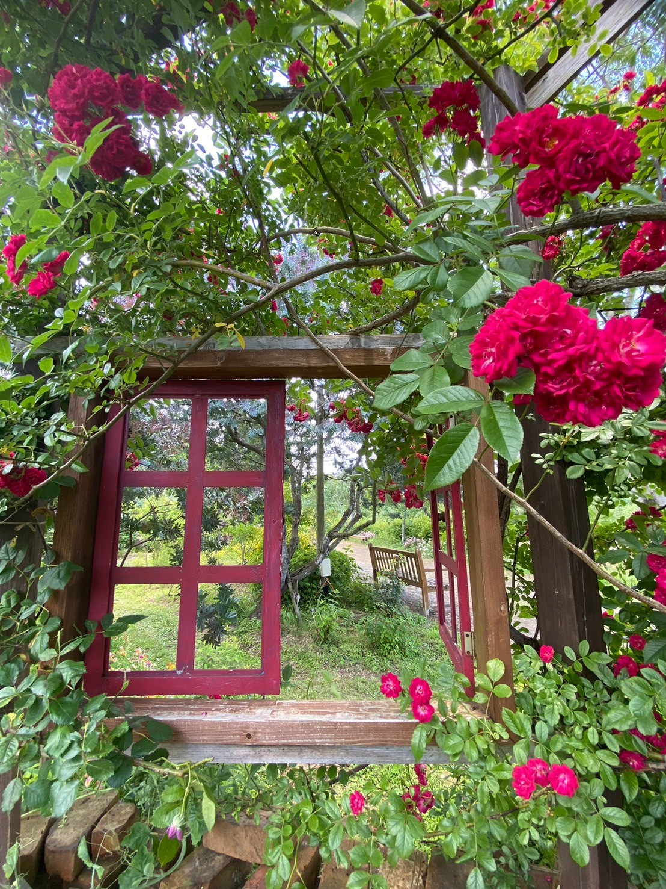
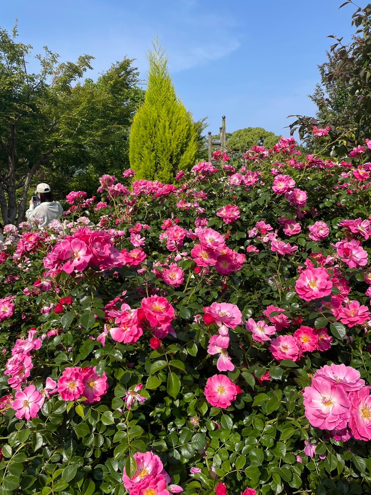
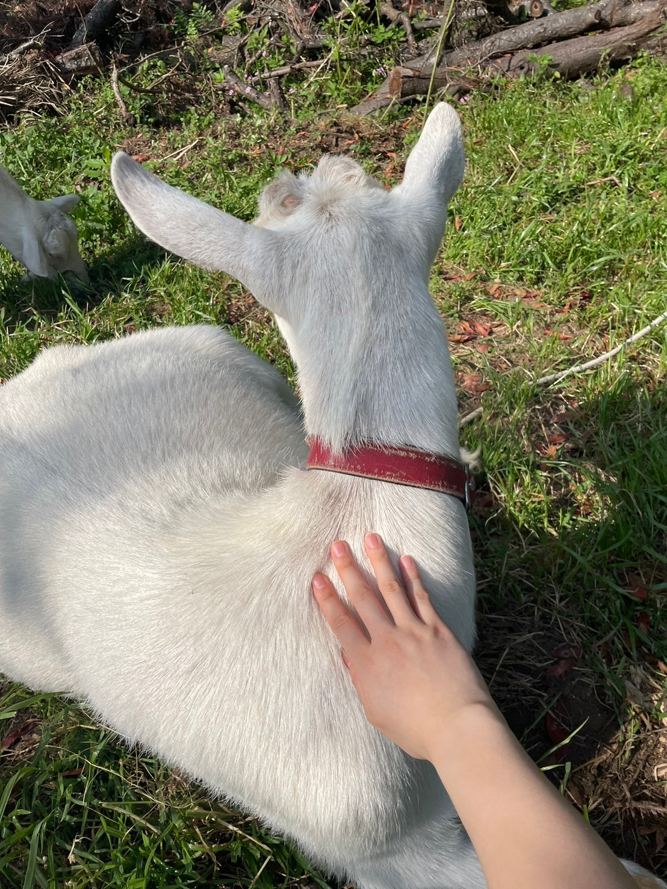

Oga Farm was established in 1997 with a passion for sustainable farming and a dedication to providing fresh, organic produce to the community. Over the years, we have grown from a small family farm into a vibrant destination for visitors from near and far.
Oga Farm offers a compelling blend of natural beauty, culinary experiences, and pet-friendly amenities. The herb and rose gardens, spanning a vast area with stunning views of Beppu Bay, provide a serene and picturesque backdrop for visitors. The farm's restaurant serves delectable dishes made with organic herbs, complementing the aromatic ambiance of the gardens. Additionally, the on-site shop offers a variety of kitchen utensils and herbal teas, while the seedling market caters to gardening enthusiasts. What sets Oga Farm apart is its pet-friendly policy, allowing visitors to enjoy the gardens with their furry companions and providing separate dog parks for different-sized dogs. Whether you're drawn to its scenic landscapes, gastronomic delights, or pet-friendly atmosphere, Oga Farm promises a memorable and enjoyable experience for all.
   